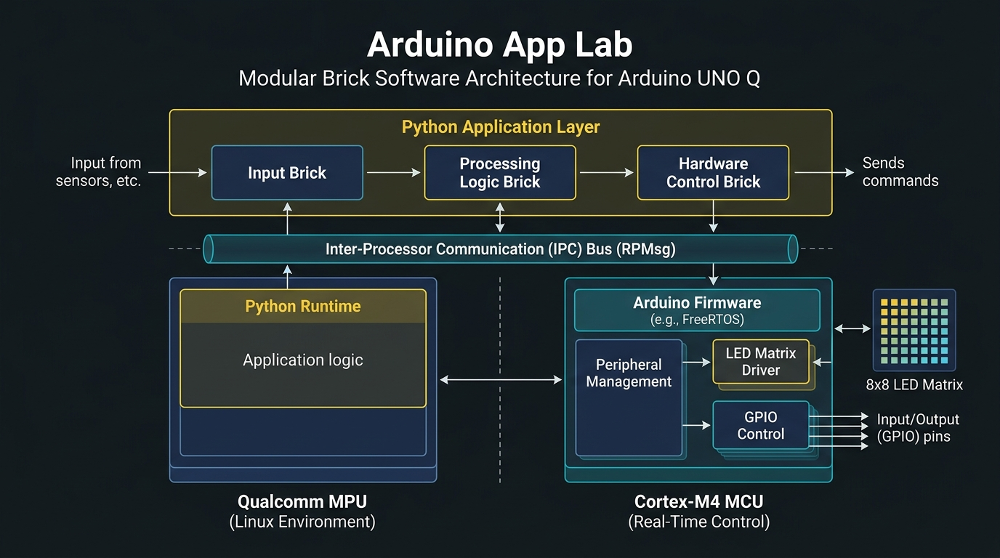
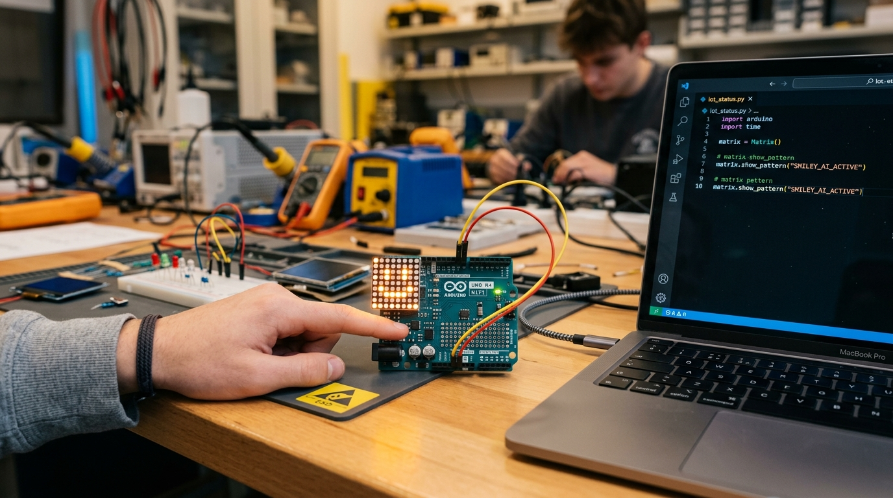

สาระสำคัญและผลการเรียนรู้ประจำบท
กรอบมาตรฐานการเรียนรู้ตามหลักสูตรแกนกลางการศึกษาขั้นพื้นฐาน และสมรรถนะสำคัญของผู้เรียน
การพัฒนาซอฟต์แวร์บนระบบสมองกลฝังตัวระดับสูงจำเป็นต้องมีสถาปัตยกรรมที่ยืดหยุ่น รองรับการทำงานแบบขนาน และนำกลับมาใช้ใหม่ได้ (Reusability) แพลตฟอร์ม Arduino App Lab ได้ออกแบบสถาปัตยกรรมซอฟต์แวร์แบบมอดูลที่เรียกว่า "Modular Brick" โดยห่อหุ้มฟังก์ชันการทำงานเป็นบล็อกอิสระ (Encapsulated Software Component) ผ่านการเขียนโปรแกรมเชิงวัตถุด้วยภาษาไพทอน ควบคุมผ่านวงจรประมวลผลหลัก App.run() และสื่อสารกับไมโครคอนโทรลเลอร์เพื่อควบคุมอุปกรณ์ฮาร์ดแวร์ เช่น แผงไฟแสดงผล LED Matrix และสวิตช์ปุ่มกด ผ่านระบบบัสสื่อสารระหว่างโปรเซสเซอร์ (Inter-Processor Communication: IPC) ซึ่งเป็นโครงสร้างพื้นฐานสำคัญในการผสานโมเดลปัญญาประดิษฐ์เข้ากับระบบควบคุมอัตโนมัติในโลกจริง
ผลการเรียนรู้ที่คาดหวังตามกรอบสมรรถนะ (Learning Outcomes)
ผู้เรียนสามารถอธิบายโครงสร้างและกลไกการทำงานของสถาปัตยกรรมซอฟต์แวร์แบบมอดูล (Modular Brick), ฟังก์ชันวงรอบการประมวลผล App.run() และหลักการสื่อสารระหว่างโปรเซสเซอร์ MPU และ MCU ได้อย่างถูกต้องตามหลักวิศวกรรม
ผู้เรียนสามารถเขียนชุดคำสั่งภาษาไพทอนเพื่อควบคุมการแสดงผลบนแผงไฟ LED Matrix (ทั้งข้อความ ไอคอนกราฟิก และแอนิเมชัน) พร้อมทั้งรับและประมวลผลสัญญาณจากสวิตช์ปุ่มกด (User Button) ได้อย่างสมบูรณ์
ผู้เรียนสามารถพัฒนาคลาส Brick แบบกำหนดเอง (Custom Brick) โดยประยุกต์ใช้วงจรชีวิต (Lifecycle Methods), การจัดการระบบบันทึกข้อความ (Console Logging) และการดักจับข้อผิดพลาด (Exception Handling) ได้อย่างมีประสิทธิภาพ
ผู้เรียนมีความตระหนักในคุณค่าของการออกแบบโค้ดแบบแยกส่วน (Modular Design) มีวินัยในการปฏิบัติตามมาตรฐานการเขียนโปรแกรม และมีความละเอียดรอบคอบในการป้องกันข้อผิดพลาดที่อาจส่งผลกระทบต่ออุปกรณ์ฮาร์ดแวร์
สถาปัตยกรรมซอฟต์แวร์แบบมอดูล (Modular Brick Architecture)
ในระบบสมองกลฝังตัวแบบดั้งเดิม การเขียนโปรแกรมมักใช้ภาษา C/C++ ภายใต้รูปแบบเชิงกระบวนการ (Procedural Paradigm) ที่มีเพียงฟังก์ชัน setup() สำหรับกำหนดค่าเริ่มต้น และฟังก์ชัน loop() สำหรับทำงานวนซ้ำอย่างไม่รู้จบ แม้รูปแบบดังกล่าวจะเรียบง่ายสำหรับโปรเจกต์ขนาดเล็ก แต่เมื่อระบบต้องรองรับ การประมวลผลปัญญาประดิษฐ์ (AI Inference) ควบคู่กับ การอ่านค่าเซนเซอร์ความเร็วสูง และ การบันทึกฐานข้อมูล รูปแบบลูปเดี่ยวจะเกิดปัญหาคอขวด (Blocking I/O) ทำให้ระบบตอบสนองช้าและปรับปรุงขยายระบบได้ยาก
Arduino App Lab จึงได้นำเสนอแนวคิด "Modular Brick" ซึ่งเป็นการออกแบบเชิงมอดูลาร์ (Modular Design) โดยแบ่งการทำงานของโปรแกรมออกเป็นบล็อกย่อยที่มีหน้าที่เฉพาะเจาะจง (Single Responsibility Principle) เช่น กล้อง Brick, โมเดล AI Brick, ฐานข้อมูล Brick และ อุปกรณ์ขับเคลื่อน Brick โดยแต่ละ Brick จะถูกจัดการและประสานงานผ่านโมดูลศูนย์กลาง App

ตารางเปรียบเทียบเชิงวิศวกรรม: สถาปัตยกรรมเดิม vs สถาปัตยกรรมมอดูลาร์ Brick
| เกณฑ์การพิจารณา | สถาปัตยกรรมเดิม (Procedural Loop) | สถาปัตยกรรมมอดูลาร์ (Modular Brick) |
|---|---|---|
| รูปแบบการเขียนโปรแกรม | ลำดับขั้นตอนเชิงเส้น (Linear Procedural) | เชิงวัตถุและขับเคลื่อนด้วยเหตุการณ์ (OOP & Event-Driven) |
| การจัดการงานมัลติทาสกิ้ง | เขียนโค้ดจับเวลาด้วย millis() หรือใช้ RTOS ซับซ้อน |
ระบบบริหารคิวงานอัตโนมัติผ่านวงจรประมวลผล App.run() |
| การนำกลับมาใช้ใหม่ (Reusability) | ต่ำ (โค้ดผูกติดกันเป็นไฟล์เดี่ยว มักต้องคัดลอกและแก้ไขใหม่) | สูงมาก (สามารถนำ Brick ไปต่อในโปรเจกต์อื่นได้ทันที) |
| การเชื่อมต่อกับระบบ AI | ทำได้ยากและใช้ทรัพยากรชิปขนาดเล็กจนหน่วยความจำไม่เพียงพอ | เชื่อมต่อไฟล์โมเดล .eim และฐานข้อมูล SQL ได้อย่างเป็นระบบ |
วงจรชีวิตและฟังก์ชันสำคัญของมอดูล Brick (Brick Lifecycle Methods)
__init__(self)
กำหนดค่าตัวแปรเริ่มต้น ผูกขาพิน และจัดเตรียมพารามิเตอร์การทำงานของมอดูล
on_start(self)
ทำงานเพียงครั้งเดียวเมื่อระบบสั่งเริ่มต้นแอปพลิเคชัน เช่น การเปิดพอร์ตหรือแสดงไอคอนต้อนรับ
update(self)
ฟังก์ชันวนลูปหลัก ถูกเรียกตามรอบเวลาเพื่อตรวจสอบสถานะเซนเซอร์ คำนวณ และสั่งการเอาต์พุต
การควบคุมอุปกรณ์ฮาร์ดแวร์พื้นฐานและการแสดงผล (Hardware Control & I/O)
บอร์ดพัฒนา Arduino UNO Q ได้รวมอุปกรณ์อินพุตและเอาต์พุตที่พร้อมใช้งานบนบอร์ดโดยไม่ต้องต่อวงจรภายนอกเพิ่มเติม ได้แก่:
- แผงไฟแสดงผล LED Matrix: หลอดไฟ LED ความสว่างสูงจัดวางเป็นเมทริกซ์ ใช้สำหรับแสดงไอคอนสถานะ (Status Icon), ตัวเลขนับถอยหลัง, ค่าเปอร์เซ็นต์ความมั่นใจของ AI หรือข้อความแจ้งเตือนสถานการณ์ฉุกเฉิน
- สวิตช์ปุ่มกดอเนกประสงค์ (User Push Button): ปุ่มกดอินพุตต่อร่วมกับวงจรต้านทานพูลอัปภายใน (Internal Pull-Up Resistor) เหมาะสำหรับใช้สั่งเปลี่ยนโหมดการทำงานของโมเดล AI หรือการสั่งบันทึกข้อมูลภาพ

ชุดคำสั่งภาษาไพทอนตัวอย่าง: brick_runner.py
Python 3.10+
#!/usr/bin/env python3 # -*- coding: utf-8 -*- """ หลักสูตร: ปัญญาประดิษฐ์บนระบบสมองกลฝังตัว (Embedded Artificial Intelligence) บทที่ 2: สถาปัตยกรรมซอฟต์แวร์แบบมอดูล (Modular Brick) และการควบคุมฮาร์ดแวร์พื้นฐาน ไฟล์: brick_runner.py """ import time import sys import logging # นำเข้าโมดูลฮาร์ดแวร์และโครงสร้างแอปพลิเคชันจากไลบรารีทางการของ Arduino App Lab try: from arduino.app_utils import App from arduino.peripherals import Matrix, Pin IS_HARDWARE_AVAILABLE = True except ImportError: IS_HARDWARE_AVAILABLE = False logging.warning("ไม่พบไลบรารีฮาร์ดแวร์ กำลังทำงานในโหมดจำลอง (Simulator Mode)") class HardwareControlBrick: """ มอดูลซอฟต์แวร์สำหรับควบคุมการแสดงผลบนแผงไฟ LED Matrix และจัดการเหตุการณ์การกดสวิตช์ปุ่มกด (Active-Low) """ def __init__(self): self.state_index = 0 self.icons = ["READY", "AI_ACTIVE", "WARNING"] if IS_HARDWARE_AVAILABLE: self.matrix = Matrix() # กำหนดพินปุ่มกดเป็น Input พร้อมเปิดตัวต้านทาน Pull-up ภายใน self.button = Pin("USER_BTN", Pin.IN_PULLUP) else: self.matrix = None self.button = None print("[INFO] มอดูล HardwareControlBrick เริ่มต้นการทำงานสำเร็จ") def on_start(self): """สั่งทำงานเมื่อเริ่มต้นโปรแกรม""" print("[INFO] กำลังเตรียมความพร้อมอุปกรณ์แสดงผล...") if self.matrix: self.matrix.show_icon("CHECK") # แสดงสัญลักษณ์เครื่องหมายถูก time.sleep(1.0) self.matrix.clear() print("[INFO] บอร์ดพร้อมตรวจรับเหตุการณ์และรันโมเดล") def update(self): """วนลูปตรวจสอบสัญญาณปุ่มกดและอัปเดตการแสดงผล""" if self.button and not self.button.read(): # Active-Low: 0 คือกด self.state_index = (self.state_index + 1) % len(self.icons) current_mode = self.icons[self.state_index] print(f"[EVENT] ผู้ใช้กดปุ่ม: สลับสู่โหมดการทำงาน -> {current_mode}") if self.matrix: self.matrix.show_icon(current_mode) # ป้องกันปัญหาการกระดอนของหน้าสัมผัสสวิตช์ (Software Debouncing) time.sleep(0.25) def on_stop(self): """คืนค่าและปิดการทำงานอย่างปลอดภัยเมื่อปิดโปรแกรม""" if self.matrix: self.matrix.clear() print("[INFO] ปิดการทำงานของฮาร์ดแวร์อย่างปลอดภัย") if __name__ == "__main__": # สร้างอินสแตนซ์ศูนย์กลางของแอปพลิเคชัน app = App() # ลงทะเบียนมอดูลฮาร์ดแวร์เข้าสู่ระบบ hw_brick = HardwareControlBrick() app.register_brick(hw_brick) # เริ่มต้นวงรอบการประมวลผลหลัก (Main Application Loop) print("[SYSTEM] เริ่มต้นการรันระบบ Modular Brick Runner...") app.run()
สวิตช์ปุ่มกดเชิงกลเมื่อถูกกด แผ่นโลหะตัวนำภายในจะเกิดการสั่นสะเทือนทางกลศาสตร์ชั่วคราว ทำให้เกิดสัญญาณแรงดันไฟฟ้ากระดอนสลับระหว่าง High และ Low หลายครั้งภายในเวลาไม่กี่มิลลิวินาที ส่งผลให้ไมโครโปรเซสเซอร์เข้าใจผิดว่ามีการกดปุ่มหลายครั้ง ในโค้ดตัวอย่างจึงแก้ปัญหาด้วยเทคนิค Software Debouncing โดยการหน่วงเวลา time.sleep(0.25) เพื่อรอให้สัญญาณนิ่งสนิทก่อนรับคำสั่งครั้งถัดไป
กลไกการสื่อสารระหว่างโปรเซสเซอร์ (IPC) และการดีบักระบบ (IPC & Logging)
เนื่องจากบอร์ดพัฒนา Arduino UNO Q มีหน่วยประมวลผลสองระบบแยกจากกันอย่างชัดเจน ได้แก่ MPU (Qualcomm QRB2210) และ MCU (ARM Cortex-M4) คำถามสำคัญคือ: "โค้ดภาษาไพทอนที่รันบนลีนุกซ์สั่งเปิดหลอดไฟ LED หรืออ่านค่าพินบน MCU ได้อย่างไร?"
คำตอบคือการทำงานผ่าน กลไกการสื่อสารระหว่างโปรเซสเซอร์ (Inter-Processor Communication: IPC) ภายใต้โพรโทคอล RPMsg (Remote Processor Messaging) ซึ่งทำงานผ่านหน่วยความจำที่ใช้งานร่วมกัน (Shared Memory Bus):
เมื่อไพทอนเรียกใช้ matrix.show_icon("CHECK") ไลบรารีจะจัดเตรียมโครงสร้างคำสั่งเป็นแพ็กเก็ตข้อมูลไบนารี (Serial Payload) แล้วส่งผ่านไดรเวอร์ RPMsg ไปยังหน่วยความจำบัฟเฟอร์ความเร็วสูง
เฟิร์มแวร์ระบบเวลาจริง (FreeRTOS) บน Cortex-M4 จะตรวจจับสัญญาณขัดจังหวะ (Hardware Interrupt) ถอดรหัสคำสั่ง และส่งกระแสไฟฟ้าไปยังชิปไดรเวอร์เพื่อจุดหลอดไฟ LED Matrix ทันทีภายในเวลาต่ำกว่า 1 ไมโครวินาที
มาตรฐานระดับการบันทึกข้อความเพื่อการดีบักระบบ (Logging Levels)
ใช้สำหรับบันทึกข้อมูลเชิงลึก เช่น ค่าดิบของเซนเซอร์ เพื่อการวิเคราะห์หาสาเหตุของปัญหา
ใช้แสดงสถานะการทำงานปกติ เช่น เริ่มต้นระบบสำเร็จ หรือโหมดที่กำลังทำงานอยู่
แจ้งเตือนเหตุการณ์ผิดปกติที่ไม่ทำให้โปรแกรมหยุด เช่น สัญญาณเครือข่ายอ่อน หรือค่าตัวแปรใกล้ล้น
ข้อผิดพลาดร้ายแรงที่ทำให้ระบบส่วนใดส่วนหนึ่งหยุดทำงาน เช่น ขาดการเชื่อมต่อกับอุปกรณ์ฮาร์ดแวร์
การบูรณาการโครงสร้าง Brick สู่การรองรับโมเดล AI และฐานข้อมูล
เมื่อเข้าใจสถาปัตยกรรมของ Modular Brick และการควบคุมอุปกรณ์ฮาร์ดแวร์แล้ว ในบทเรียนถัดไป ระบบจะนำบล็อกซอฟต์แวร์เหล่านี้มาประกอบเข้าด้วยกันเป็น ขั้นตอนการประมวลผลข้อมูล (Data Pipeline) สำหรับงานปัญญาประดิษฐ์เชิงวิศวกรรม:
.eim (VAD / FOMO / KWS)การประเมินสมรรถนะการปฏิบัติการ (Performance Assessment Checklist)
รายการเกณฑ์การตรวจสอบสมรรถนะที่ผู้เรียนต้องผ่านการประเมินผลในบทเรียนที่ 2
คำถามทบทวนองค์ความรู้ท้ายบทเรียน (Academic Review Questions)
แบบฝึกหัดสำหรับประเมินตนเองและทบทวนเนื้อหาสำคัญเพื่อเตรียมความพร้อมสู่การปฏิบัติการขั้นสูง
void loop()) ใน Arduino แบบดั้งเดิม?
คลิกเพื่อดูแนวคำตอบ
App.run() ทำให้โค้ดมีความยืดหยุ่น ปรับปรุงแก้ไขง่าย และนำกลับมาใช้ใหม่ (Reusable) ได้อย่างมีประสิทธิภาพ
คลิกเพื่อดูแนวคำตอบ
คลิกเพื่อดูแนวคำตอบ
time.sleep(0.25)) หรือการตรวจเช็คเวลาผ่านฟังก์ชันนาฬิกา (Timer Threshold) เพื่อให้ระบบเพิกเฉยต่อสัญญาณรบกวนในช่วงเวลาสั้น ๆ หลังจากตรวจพบการกดครั้งแรก
แบบทดสอบท้ายบทเรียนที่ 2 (ปรนัย 10 ข้อ)
ทดสอบความรู้ความเข้าใจตามเกณฑ์มาตรฐานตัวชี้วัดสาระเทคโนโลยี พร้อมเฉลยและบันทึกคะแนนอัตโนมัติ
บทเรียนที่ 3: การจัดการระบบฐานข้อมูลบนอุปกรณ์ด้วย Database-SQL Brick
ศึกษาการเชื่อมโยงระบบบันทึกประวัติการตรวจจับ AI และการสืบค้นข้อมูลย้อนหลัง